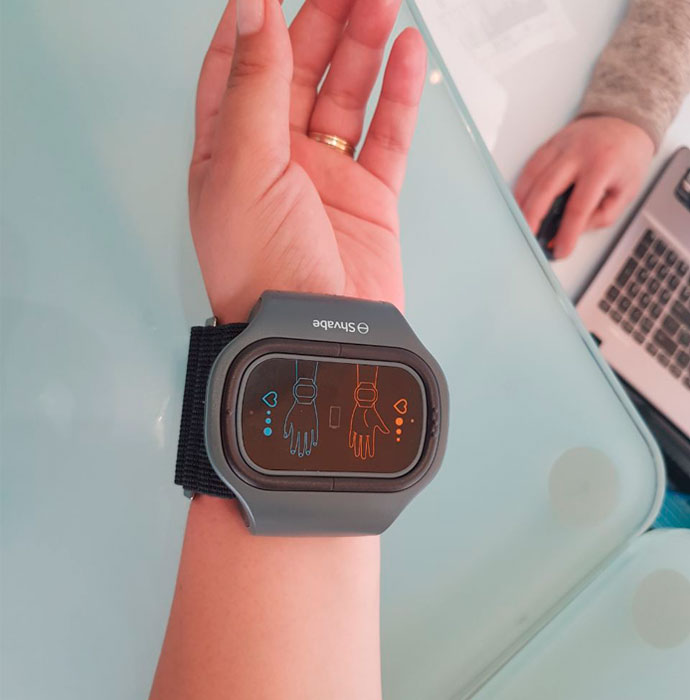

-

-
 AnnetPinkПрочети за 10 минути
AnnetPinkПрочети за 10 минути
Как да се отървем от хипертония без хапчета и инжекции?
Здравейте, скъпи мои!
Казвам се Ани, на 52 години съм и отдавна имам високо кръвно налягане. Планирах да живея дълго и щастливо с тази диагноза, докато един ден хипертоничната криза за малко не ме изпрати на онзи свят. Тя ме накара да преразгледам възгледите си за живота и да започна да лекувам хипертонията. Между другото, отдавна вече не вдигам кръвно над 130/80. Да ви разкажа ли как го направих?

ОТКЪДЕ СЕ ПОЯВИ ХИПЕРТОНИЯТА
Бях спортистка, на млади години тренирах плуване, водех здравословен начин на живот и винаги държах ръка на пулса. Кръвното ми беше леко повишено, но на мен ми се струваше, че това е нормално. Не познавах баща си, но майка ми беше казала, че той е имал високо кръвно. Изглежда, хипертонията е единственият подарък от баща ми.
На 28 годишна възраст започнах да забелязвам, че ми става лошо, не само от двойно кафе, но и просто така, от време на време. Когато тези случаи зачестиха, отново отидох на лекар.

УДАР НАПРАВО В СЪРЦЕТО
Беше много натоварен ден, мотах се из града, бях много нервна, пих кафе и си мечтаех само за това, как ще си легна. Вече вкъщи започна да ме боли глава, очите ми сякаш излизаха от орбитите. В гърлото ми на вълни ми се гадеше, краката ми станаха като от памук.
Това продължи около 15 минути, които ми изглеждаха цяла вечност. След това, с последните си сили, допълзях до телефона и извиках бърза помощ. И веднага след това загубих съзнание.

ВЛИЗАНЕ В БОЛНИЦАТА И ЗАВРЪЩАНЕ С ОНЗИ СВЯТ
Дойдох на себе си вече в палатата. Възстановяването ми беше дълго, многото лекарства и болезнени процедури ми помогнаха да се възстановя. Когато излязох от болницата, осъзнах, че съм на косъм от смъртта. Ако лекарите не бяха дошли навреме, нямаше да ме има вече.
След изписването си започнах да вземам скъпи лекарства, но от тях нямаше ефект. Чувствах, че ми става все по-зле и по-зле.

Ходих при различни лекари, всички ми изписваха едни и същи лекарства и еднакви процедури. Постоянно бях нервна от безсилието и се чувствах все по-зле и по-зле. Кръвното ми налягане отново скачаше, лекарствата спряха да ми помагат. В отчаянието си потърсих помощ в алтернативната медицина, но и тук ме очакваше разочарование. Билките и настойките дават временен резултат, хомеопатията не даде никакви резултати. Не знаех, какво да правя.
Станах нервна, страдах от безсъние и ужасно главоболие. Постоянно си мислех, че влизането ми в болницата можеше да стане фатално и кой знае дали ще мога да преживея следващия пристъп.
ТЪРСЕНЕ НА ЛЕЧЕНИЕ
Когато за пореден път търках праговете на болницата, на изхода случайно се сблъсках с една своя позната, която работеше там като медицинска сестра. Разприказвахме се, оплаках й се от хипертонията си, след което тя нави ръкава на блузата си и ми показа един малък апарат на китката си. Оказа се, че и тя, като мен, много години е живяла с високо кръвно, но тази гривна й помогнала да се чувства по-добре.

Моята позната ми разказа, че откакто я носи, вече няма главоболие, не реагира остро на промените на времето и да се чувства много по-жива. Тази гривна е най-новото изобретение в областта на медицината, което по своята ефективност е много по-добро от масажите, билките и народната медицина, взети заедно. Устройството пуска малки и къси импулси ток, като по този начин стимулира кръвообращението и тонизира кръвоносните съдове.
Това от своя страна, засилва движението на кръвта в организма: с течение на времето артериалната хипертония се премаха, кръвното налягането се изравнява с нормата на астронавта. Мозъкът получава пълно кръвоснабдяване, сърдечният мускул изпомпва достатъчно кръв, което означава, че рискът от инсулт и други съпътстващи заболявания на хипертонията е сведен до минимум.
Не можех да повярвам, че медицински служител ми разказва за неща, които са скрити от повечето хора, страдащи от хипертония!

Честно казано, малко се съмнявах думите на моята позната. Ами ако всичко тоа е измислица, а тя е просто търговски агент?
Дойдох си вкъщи и прегледах цялата информация за тази гривна. Ето какво намерих.
Импулсите на ток с различна величина действат върху корените на гръбначните нерви, като по този начин тонизират кръвоносните съдовете за по-добро кръвообращение. Когато гривната пуска серия от токови импулси, тогава нервните влакна се възбуждат. Благодарение на този ефект, в организма се подобрява микроциркулацията и се увеличава клетъчното хранене, което запазва структурата и функционирането на кожата.
Научните доказателства, подкрепени от положителните отзиви на пациенти откардиологичното отделение, ме убедиха да си поръчам този апарат.
След няколко дни на употреба, се събудих бодра, с много хубаво настроение и без главоболие. В началото дори не разбрах какво се е случило, но когато осъзнах, че нищо не ме боли и се чувствам страхотно, разбрах, че: това е работа на гривната и нейната токова терапия.

Мина почти една година, откакто за първи път опитах действието на гривната и за това време сънят ми стана по-дълбок и по-добър, главоболието, световъртежа и гаденето изчезнаха напълно. Станах жизнена и енергична, каквато не съм била, дори когато бях по-млада.
Ако преди моето обичайно кръвно налягане беше 170/100, то с гривната то не се вдигаше над 130/80. Така продължава и до днес, така че уверено мога да кажа, че устройството наистина ме спаси от хипертонията.
Откакто започнах да използвам тази гривна, нито веднъж не съм имала такова главоболие, каквото имах преди това. Не мога да опиша с думи, какъв прекрасен стана животът ми без хипертонията!
Аз отново съм активна, много се разхождам, не се мъча по врема на полетите, много чета и най-накрая с пълна сила се чувствам като здрав човек!

ОТ КЪДЕ МОЖЕТЕ ДА СИ ВЗЕМЕТЕ ГРИВНАТА
Радвам се, че много хора се стремят да избегнат тези грешки, които аз допуснах и започват да се грижат за здравето си още преди първите тревожни аларми. За всички, които страдат от високо кръвно налягане или други сърдечни проблеми, оставям линк към сайта, от където си поръчах устройството. До има промоция. Пазете се, скъпи мои.
Отиди на сайта на производителя на коректора на кръвното налягане


Weekly Newsletter
Абонирайте се за независими новини
от най-добрите блогъри на LiveJournal